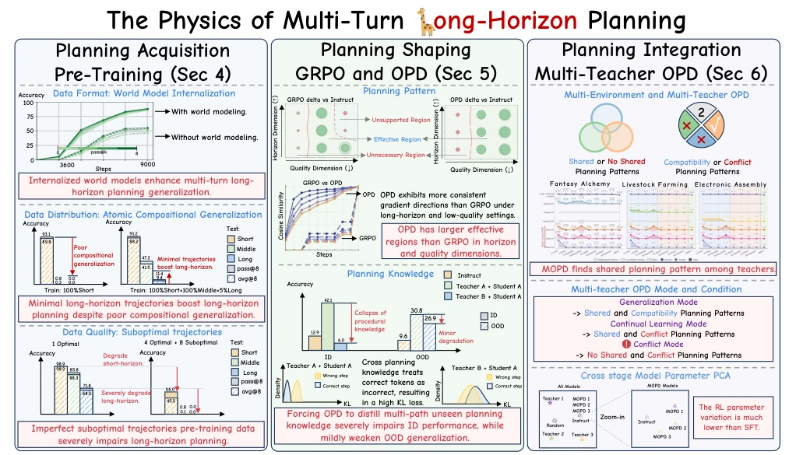
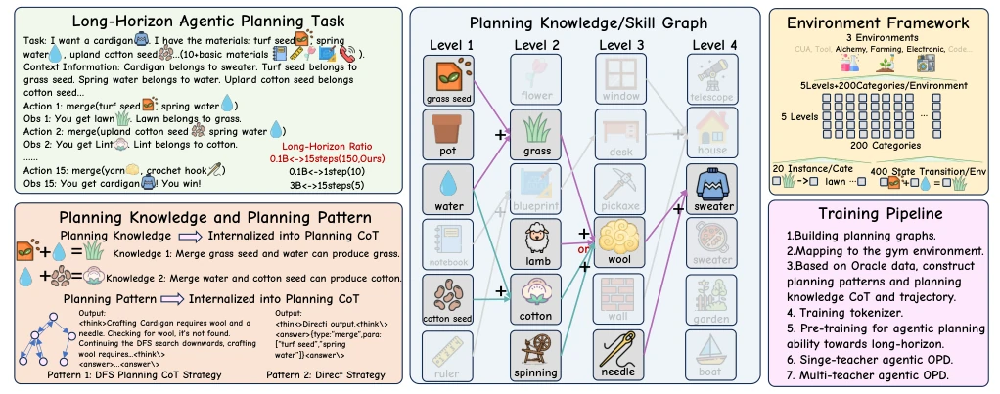
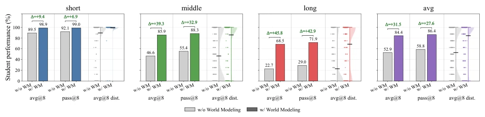
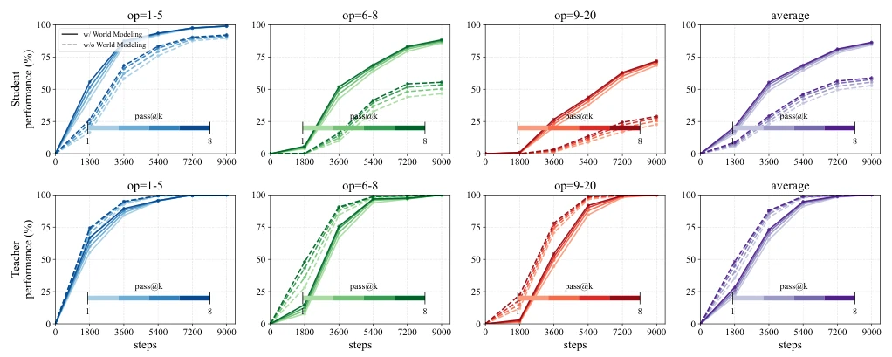
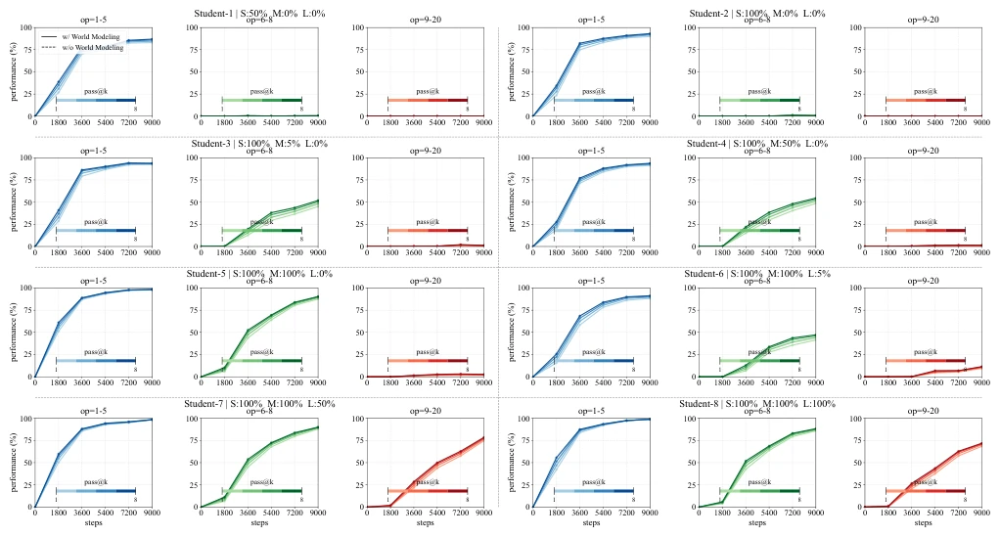
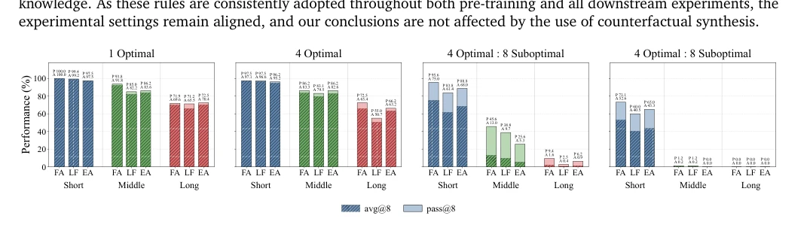
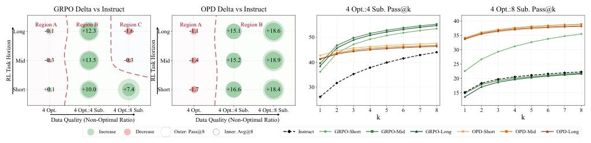
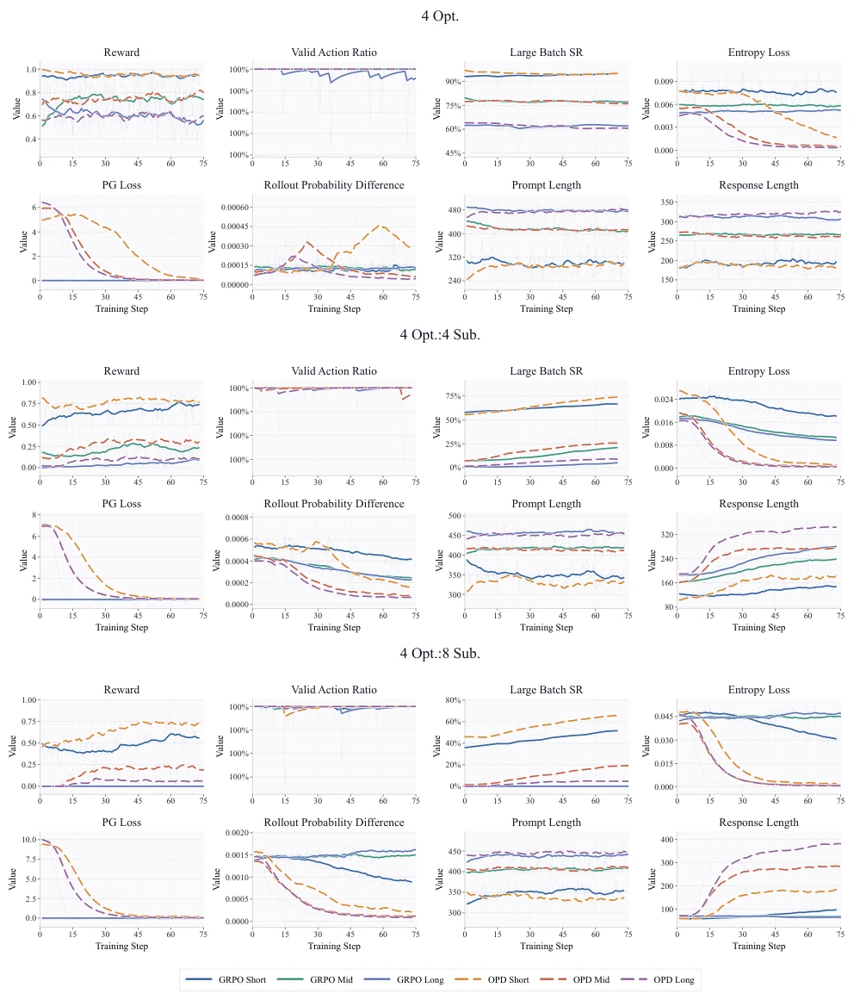
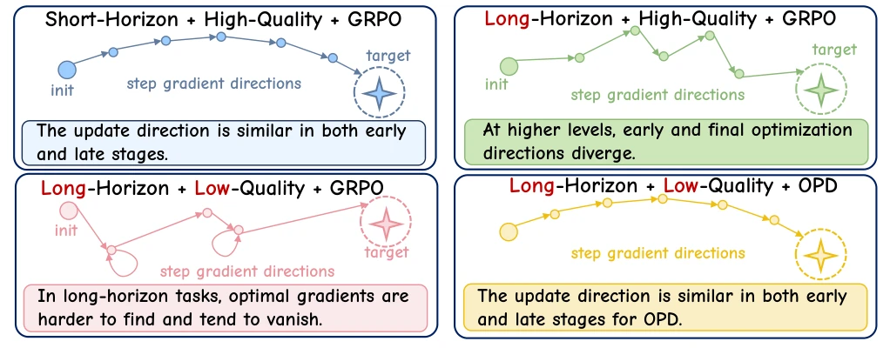
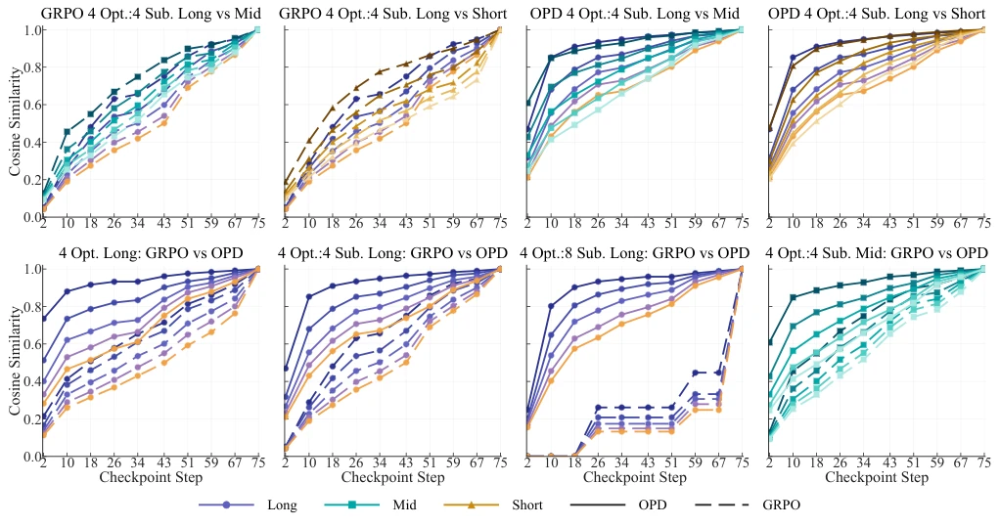

This paper attempts to perform a physical dissection of "long-horizon planning", replacing the internet black box with a controlled environment, which is commendable. However, using "alchemy" and "electronic assembly" as the touchstone for general intelligence inevitably raises doubts about its ecological validity, after all, the real world does not possess such clean synthetic rules. The authors decompose planning into "modes" and "knowledge", finding that OPD is more stable than GRPO under low-quality data, which serves as a sobering pill for RL hyperparameter tuning practitioners. However, synthetic data is ultimately a greenhouse flower; whether it can withstand the noise of the real world remains questionable. Furthermore, MOPD's dependence on shared modes implies potential bottlenecks in multi-agent collaboration; if modes conflict, catastrophic forgetting occurs, which is a major issue in actual deployment, indicating that "harmony without uniformity" is not that easy to achieve in model distillation.
研究动机Motivation
现有基础模型依赖不可控的互联网数据（Yuan et al., 2026; Zhu et al., 2026a），导致规划能力的来源模糊。虽然 OSWorld 2.0 (Yuan et al., 2026) 等基准测试了能力，但无法解释能力如何习得、塑造和整合。Li et al. (2026f) 和 Zhang et al. (2026b) 也指出长程规划仍是短板。核心问题在于：如何在不同训练阶段根本性地提升规划能力？现有研究缺乏对数据格式、分布和质量影响的系统性归因。特别是预训练阶段，模型是否真正内化了世界模型，还是仅记忆了轨迹，尚无定论。后训练阶段 RL 算法的边界也不清晰，导致盲目调参。
Existing foundation models rely on uncontrolled internet data (Yuan et al., 2026; Zhu et al., 2026a), leading to vague sources of planning ability. Although benchmarks such as OSWorld 2.0 (Yuan et al., 2026) test capabilities, they cannot explain how capabilities are acquired, shaped, and integrated. Li et al. (2026f) and Zhang et al. (2026b) also point out that long-horizon planning remains a weak point. The core question lies in: how to fundamentally improve planning ability across different training stages? Existing research lacks systematic attribution regarding the impact of data format, distribution, and quality. Especially in the pre-training stage, whether the model has truly internalized a world model or merely memorized trajectories remains inconclusive. The boundaries of RL algorithms in the post-training stage are also unclear, leading to blind hyperparameter tuning.

Figure 1: An overview of the studying into physics of multi-turn long-horizon planning. It studies the long-horizon planning ability across three training stages: Large-scale pre-training, RL-based post-training (OPD and GRPO), and Multi-teacher model consolidation post-training (MOPD). The giraffe icon is used to represent the “L” in “Long”. Its long neck also reflects that the agents need to look far ahead in long-horizon planning.
Proposes a unified controlled multi-turn environment, studied in three stages. 1. Pre-training: Compare direct action prediction with CoT-based state transition modeling (World Model), finding the latter generalizes stronger, proving internal world models are crucial for long-horizon planning. 2. Post-training: Compare GRPO with OPD, introducing a mutual information perspective to distinguish planning modes and knowledge. Finding OPD has a wider effective region under low-quality data, because sparse credit assignment is less consistent than OPD. 3. Integration: MOPD multi-teacher distillation, converging shared modes. Environment built based on skill graph, supporting precise control of task length and data quality. Through the controlled variable method, systematically analyzed the impact of data format, distribution, and quality on planning ability, clarified the mechanism of action of different training stages, especially revealing the cumulative damage effect of suboptimal trajectories on long-horizon planning.

Figure 2: Overview of the proposed long-horizon agentic planning framework.
Tested in three fields: alchemy, breeding, and assembly. Metrics are Pass@8 and Avg@8. Results show: Internalized world model significantly improves long-horizon generalization, direct prediction converges fast but ceiling is low; only 5% long-horizon data is needed to activate combinatorial generalization, proving atomic skills are insufficient to support long-horizon planning; in low-quality data, OPD effective region is larger than GRPO, gradient direction is more consistent; MOPD achieves cross-environment generalization in shared mode, conflicting modes cause catastrophic forgetting. Ablation studies verify the impact of data distribution and trajectory quality, indicating suboptimal trajectories will seriously damage performance.

Figure 3: Final performance comparison between students with and without world modeling across three difficulty levels. For 3 domain and 3 difficulty level, each test subset contains 160 instances, resulting in 1,440 test instances for each checkpoint. During inference, we set the sampling temperature to 0.4 and independently sample 8 trajectories for each instance, with a limitation of 20 steps per trajectory. Therefore, evaluating one checkpoint requires a most total of 11,520 inference runs. We report avg@8 as the average success rate across the 8 sampled trajectories, and pass@8 as the proportion of instances for which at least one of the 8 trajectories successfully completes the task. Unless otherwise specified, we use the same evaluation protocol in all subsequent experiments.

Figure 4: Performance scaling with pre-training corpus size for agent planning, comparing students with and without world modeling across three difficulty levels. The teacher is demonstrating the performance of the post-training set with the same distribution.

Figure 5: Performance scaling across different pretraining distributions.

Figure 6: Effect of pretraining data composition on downstream performance. The figure compares avg@8 and pass@8 across three task domains and three difficulty levels under different pretraining configurations. FA, LF, and EA denote Fantasy Alchemy, Livestock Farming, and Electronic Assembly.

Figure 7: Applicability boundaries and post-training capability upper bounds of RL training. The first two panels show the applicability boundaries of multi-turn GRPO and OPD across RL task horizon and non-optimal action ratios (pre-training data quality). The last two panels compare the post-training capability upper bounds of different models.

Figure 8: Training dynamics across optimization settings. Comparison of multi-turn GRPO and OPD under 4 Opt., 4 Opt.:4 Sub., and 4 Opt.:8 Sub. settings.

Figure 9: Comparison of step gradient directions between GRPO and OPD under varying optimization conditions.

Figure 10: Evolution of gradient directions. Top-5 SVD direction similarity between intermediate and final checkpoints.